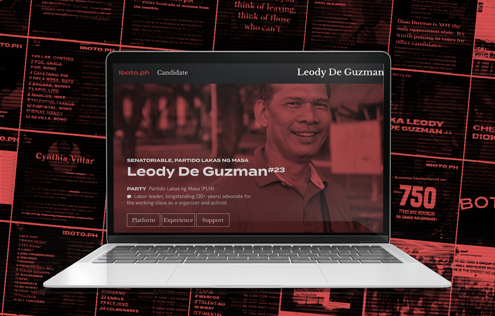
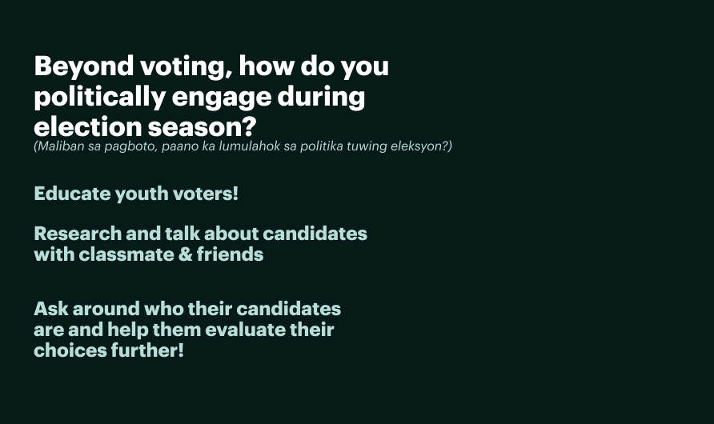
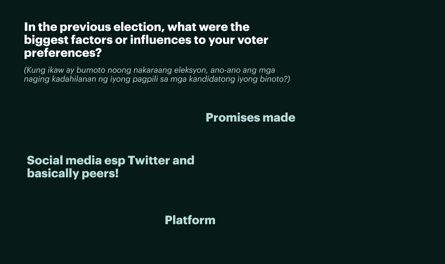
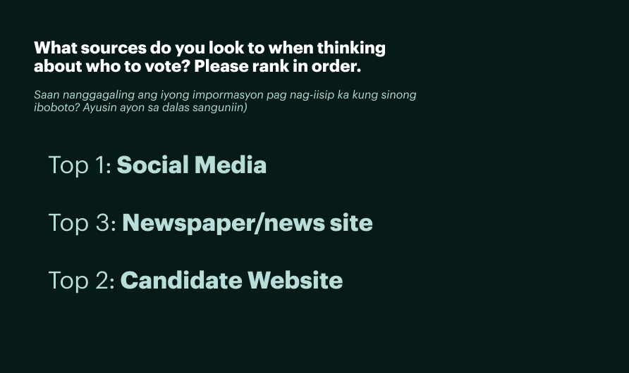
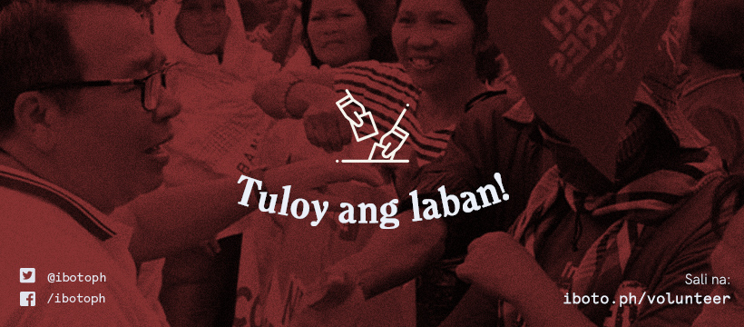
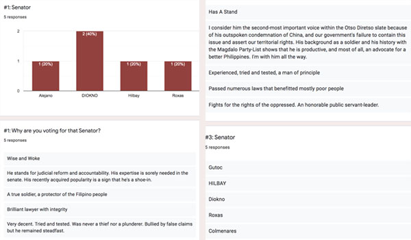
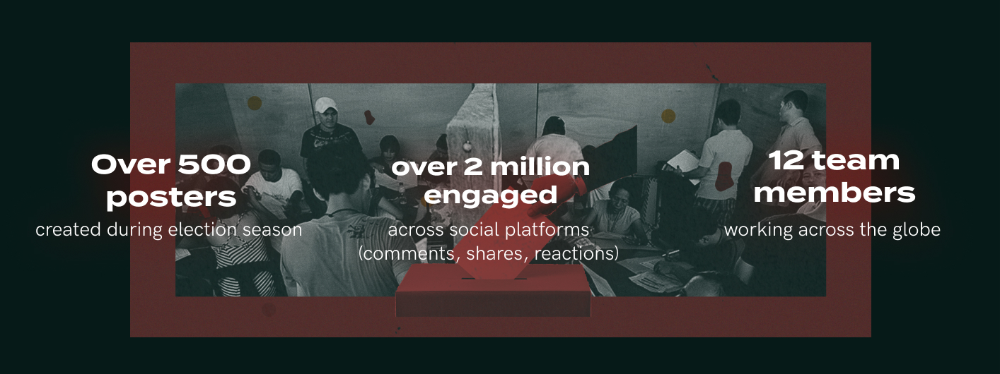

For the Philippine midterms, I launched a voter education resource network for progressive candidates through a web experience and social media journalism arm. We reached millions, with materials directly shared over a million times.
I explored learnings on the neutrality of tech as a medium, free internet, and more.
Context
Advocating for progressives in the Philippine midterms
May 13, 2019 would mark the midterm of President Rodrigo Duterte—with it, key senatorial, party list, and local positions to be contested. Progressive candidates with limited funds for on-the-ground campaigning were easily lagging behind in polls and surveys.
In the months preceding the election, I began brainstorming with Developh organization mates on how we could propel voter education to the masses. Intentionally targeting social media and more visual-oriented, compact means of information dissemination, I was thinking closely about the 76 million social media users (71% penetration) in the Philippines, with 72 million of those being mobile social media users. Filipinos are communicating, learning, and congregating online.
From senatorial candidate surveys, it was clear that awareness and education were paralyzing issues. At the same time, majority of Filipinos reported the internet and social media as their tool for information in the electoral season. It was clear: the web space was an underexplored platform that we wanted to investigate.
Surveys
We distributed comprehensive surveys after the 2019 midterms, used to largely validate the assumptions we had in our initial release and to guide us for Iboto.ph's next iterations. Translation and editing help: Leo Jaminola, Moira Vergel de Dios Beyond voting, how do you politically engage during election season? (Maliban sa pagboto, paano ka lumulahok sa politika tuwing eleksyon?)  In the previous election, what were the biggest factors or influences to your voter preferences? (Kung ikaw ay bumoto noong nakaraang eleksyon, ano-ano ang mga naging kadahilanan ng iyong pagpili sa mga kandidatong iyong binoto?)  What sources do you look to when thinking about who to vote? Please rank in order. (Saan nanggagaling ang iyong impormasyon pag nag-iisip ka kung sinong iboboto? Ayusin ayon sa dalas sanguniin)
Guiding proto-personas—Users & Neutrality
While continuing inquiry, we developed proto-personas to guide us through the lens of undecided voters. We assumed that existing supporters would spread awareness, and undecided voters would be educated.

PERSONA: UNDECIDED, LEARN
Juan
Broad C or B class; active on social media and is engaging with political discussion. Strong values, poll choices are still incomplete. Online daily (on mobile, or at computer shops) and frequently receives news on Facebook light or television first. Shares political posts on their feed and/or with peers.
- Needs to accomplish—comment on political activity, be informed of political activity
- Needs to feel—understood: their thoughts and political views are being upheld
- Considerations—what's the easiest way to deliver long-lasting information to them? When/how do they share information, and with whom?

PERSONA: GENERALLY DECIDED, SPREAD AWARENESS
Joanna
B or A class, based in urbanized area within the Philippines and consciously attempting to become more politically engaged. Online daily (if not every hour), frequently receiving news on social media platforms before any other. Engages in political discussions on occasion.
- Needs to accomplish—receive accurate news information, share their political stance
- Needs to feel—informed: given all their information and sources
empowered and engaged: that they're participating in fruitful discussions - Considerations—where is the most productive space for them to engage in discourse? Where do they go to for information first?
Audit—Voter Education Landscape
To better understand where voters go to, we looked into common sources reported to be used by the electorate and what was available in them.
 Snapshot of sites and resources we looked at
Snapshot of sites and resources we looked at
Understanding the landscape coupled with points from our voters helped us scope out gaps in today's resources.
Problem Identification
Low public awareness 👎
The masses don't hear or see any info about these candidates—they're not aware of them at all.
Poor/non-existent online candidate info 👎
Online, candidates don't create primary sources for themselves; not to mention that progressive candidates get less exposure.
Disjoint resources & disinformation 👎
The "fake news" issue in these countries isn't only an issue of ignorance. It's an issue of intentional disruption, dissonance, and manipulation.
In clarifying and synthesizing these problems, we identified three main issues in the current electoral landscape.
OUR PRODUCT—a web-focused means for Filipino voters to be informed of progressive candidates, driving political discourse surrounding them.
Initially, we started out with a website. Iboto.ph then heavily used social media to disseminate information and engage with voters, with our website as a primary tool.
OUR QUESTIONS—How can we educate voters through social platforms? How can we encourage discussion and conversations for the Filipino voter?
MY ROLE—I managed a team of 12, now ~25 in its second iteration from engineers, writers, and designers; leading the design and engineering for an end-to-end voter education experience and our models for campaigning.
Iboto.ph is intentional about focusing on progressive-leaning candidates, here's why.

Focusing on progressive candidates
In its inception, the vision for Iboto.ph was to be a database for all candidates. We already knew that certain parties topped the popularity charts and that it was difficult for other senatorial candidates to put together resources to match these campaigns.
Instead of being an all-around platform, the team decided to publish pages solely for progressive candidates to specifically forward and act as a unique network collating these candidates together. They frequently have smaller campaign teams and budgets compared to other candidates. We wanted to drive our efforts into upholding them as opposed to having mixed content. Supporters and dissenters alike could use our page to inform them directly of these candidates and the work we believe they're doing well and right.
This decision would then pave the usage we would imagine for the tool, as well as how we would position and distribute ourselves.

Inquiry
Elections for the online Filipino
Meaning "to vote" in Tagalog, the title Iboto.ph was chosen for its simplicity and forwardness.
Key Question ↗ Undecided voters are key
What are my values? What change am I looking for in the Philippine senate? What qualifications am I looking for in a candidate? What am I looking for in a candidate? What information do I need to retain about my candidate? How can I further engage with my candidate?
Our key assumption: voters are looking to actively learn, and have changeable minds. Our marketing and language would then target demographics of active, online users who were still undecided in their voting slate, or receptive to change as our key audience.
Next, our goal was to put ourselves in the place of the Filipino voter. To do this, I constructed a journey map so we could clarify intentions and desires for our proto-personas and help define key actions and features with our team, guiding feature development.

Understanding these actions and the nuances in user needs and considerations helped us move forward.
Positioning Iboto.ph

National Brand—we needed a strong, consistent identity that made it clear we were here to politically engage. Our palette uses accent colors (and a main red) borrowed from the Philippine flag. These components and mateiral were reused throughout the project.
Ethical Design—while considering design for a majority market, ethical design principles were core to our work. Focusing on human rights: reducing inequality to access to information, then easing human effort: respecting functional, convenient, and reliable designs, and then creating for a delightful human experience were key to our process.

Value sharing—After getting a better sense of actual use cases, we understood that from now on—the point of expansion was to convert, and engage people with candidates who hold aligned values. Recall, we constrained our selection from our initial goal of displaying voter information for all, making an intentional choice to serve more overlooked candidates with shared values.
 The suite of resources in our initial offering
The suite of resources in our initial offering
Synthesis
After we determined key offerings and gaps for voters, we revolved our work around some synthesized points.
Engage through social media, but educate deeper. Discovery and discourse was clearly funneled in through social media, but people sourced for truth elsewhere. Knowing what platforms to use as funnels and where to deliver the bulk of our content became key choices and considerations.
Empowerment is key. Every voter wants to feel like they're doing the right thing for the country. Every voter, despite their initial choices, deserves to be given the best suite of tools to help them decide—and even influence. Our philosophy was to resource knowledge to underrepresented candidates to spark discussion.
People are ready to engage. Hundreds of respondents and dozens of interviewees mentioned desire to actively engage: be it sharing a piece of content or sparking discussion. This helped us know that we could prompt our users and they would generate their own discussions—we were facilitators not only in education, but in dissemination too.
To raise awareness, raise stances. This was a non-negotiable we found to many voters.
My goals for the Iboto.ph product at this point were the following:
Overall engagements
Are users looking into our content and materials and engaging with them in a meaningful way? These might later convert to referrals to our main site.
Promote voter discussion
This might look like additional content on quote retweets or shares, comments, or answers to the surveys and forms we send out.
Social media referrals
Serving content on a centralized sources, we were focused on conversions and referrals from our social platforms.
Because we were operating independently (not completely under any campaign) and ewre focused mainly on getting information out as much as possible, this might look different the more our platform evolves.
Designing for the Web
Building the Iboto.ph Voter Education Site
 Our draft for organizing the information hierarchy on the page
Our draft for organizing the information hierarchy on the page
To present information effectively, we opted for a website with infographic-like displays highlighting information on our backed candidates.
On first glance, viewers would be able to see candidate stances on critical and timely issues — from lowering the minimum age of criminal responsibility to divorce. Each point would link the user to a relevant article or claim about the chosen information.


Designing candidate screens
We iterated through various layouts and information displays through card sorting and usability tests. From research, we focused on empowering users with information, and highlighting key leanings, deprioritizing meritocratic spaces like education.
Our data showed us that along with news, social media and candidate websites were the most valued, go-to spaces when voters sought candidate information. Setting up pages for each senatoriable was one of Iboto.ph's key gateways.
Candidate Page—Collating candidate stances was a challenge: we wanted to standardize viewpoints on key issues as much as possible, but shifted stance organization based on key issues. In the future, reordering this based on more solid data would be ideal.
Selecting Candidates—With a tight timeline, we published guides for a total of seven candidates. We chose these candidates in order of our political alignment with them, and the level of coordination we could have with their campaign teams. Other candidates that we didn't have direct networks to were sourced later due to the amount of research it took our copywriters.
Iboto.ph was our site and home product, but we moved to social media to truly engage people and channel them to our resources. Here's what we considered.
 A series of candidate posters our team released across our platforms, directed back to Iboto.ph
A series of candidate posters our team released across our platforms, directed back to Iboto.ph
Reaching the (social) masses
Designing across platforms
From here, we focused on extending the platform: creating downloadable posters, PDFs, text-based information sheets, and more from the candidate base we had created. The template we had served 7 candidates, displaying salient issues to their background to educational experiences. Iteration here was a lot of refining content and methods of display, most especially when direct campaign leads for these candidates reached out to us.
At peak, I was managing a team of over 12 active volunteers from 3 timezones (me mostly 12 hours behind) to build engagement and continue releases and iterations of our product.
A design system?
We developed a Google Slides publicity material template (Save > PNG!) that was easily editable and component-based to release any updates on mobilizations, vote counts, anomalies, and the like.
We expanded upon a news site (Rappler)'s hashtag initiative,
 A Google Slides system for our social media managers and content writers
A Google Slides system for our social media managers and content writers

For our marketing materials, we kept in touch with campaign teams of as much candidates as we could (particularly Leody de Guzman, Samira Gutoc, Pilo Hilbay, and Neri Colmenares) to help disseminate information and provide additional context + historical information. Our Twitter was reaching 10,000+ engagements per tweet, and our Facebook with 6,000+ engagements and 50,000+ views on the regular.
Designing for discussion on social platforms
Tracking Iboto.ph Facebook public shares, we noticed usage of our candidate infographics as starting points for discussion.
We continued to produce multi-format visuals to description-heavy posts with lots of prompting and support from campaigns with the work of our designers and content writers.
We focused on copy that was engaging and direct to encourage discourse—and build reach.

Rapid Iteration
At this stage, our designers begun sourcing feedback from volunteer campaign groups (mostly youth ones), friends and family, and other organic online reach who quickly pointed out accessibility issues, talked about policies to focus on, or specific points about each candidate we should highlight. Much feedback was interface or content-related.
Through usability testing and contextual inquiry sessions done in campuses & remotely, we actively tested interface and layout changes throughout our 3-week release period.
Designing for Free Data
While scaling Iboto.ph and iterating through our website and content strategies, we made sure to release descriptive content and make material as accessible as possible for free data/social media light users.
For demographics who weren't able to navigate outside social media platforms without a cost (and didn't intend to pay), we were still able to communicate news and journalism to them—in forms other news channels didn't frequently take on.
 Snippet from full election slate Google Form
Candidate Targeting
Our progressive platform focused on campaigning for seven nominees. We rotated content and marketing for campaigns, sending out surveys and gathering user opinions to generate content.

Results & Reach
Launching a journalism arm and building a space for discussion.
Iboto.ph evolved into a space not only for awareness, but also activism.
After pivoting our product and focusing on funneling users from social media, we amassed over 2 million engagements on our social profiles, with our website and social pages getting that amount of hits.
- Over 500 graphics
- Over 2 million end users engaged
- 12 team members working around-the-clock
Challenges—The language, presentation, and marketing we would deploy across our social platforms would dictate the initial user attitude to the website. We wanted the candidate pages to be as neutral as possible, serving to inform—this design decision made us put more weight into marketing and methods of dissemination, as well as focusing more on research and information. This was supported by the analytics we had on our organic growth.
Next Steps
Transforming the digital space in political contexts
Through Iboto.ph, we were astounded not only by the traction and numbers we hit, but by the engagement of the platform. The internet is a tool not maximally used by Philippine candidates: this project we came up with in only three weeks, sometimes doing the barebones work of comprehensively talking about a candidate's platforms, set us up to realize how much more work could be done in the space.
- Building engagement
What's the next step after engagement? Many users inquired on our pages on steps to support candidates. Our eyes are next set on direct action. - Localization for accessibility and language
We're deployed in a country that speaks over 150 languages. English may be an official language, but we're looking to offer localized versions of the product. For now, we focus on key points, concise language, and visual indicators. - Nudging users to act
We're looking more intensively on how to bridge the gap between awareness and action. - Combatting disinformation
A successful space we explored was on-the-spot reporting and journalism: from vote counts to illegal campaigning and fallacious statements. People are always online, and we know they need to be in the know. We're exploring how an update stream can increase engagement while offering another realm of political education.

Insights
Conversation as progress
Iboto.ph evolved as a product far beyond our initial product: we wanted to initially build a website that displayed information about each and every candidate. We made an early decision to focus on progressive candidates that then set a new opportunity area: conversation and communication—one that wouldn't have risen in its original form.
The next Philippine elections are happening in 2022. The team behind Iboto.ph is thinking of how to further transform the digital space for education, awareness, and discussion as we did with Iboto.ph.
- Design for desires, especially the untapped ones—we furthered Iboto.ph's social presence as users moved to use our tools to carry conversations over, and empowered users with our suite of tools.
- Neutrality is not an option—designing to reach those who could change their viewpoints and spread the word to support our candidates was priority—tech is never neutral.
There's value in engaging with the principles that voters believe in, and using those as grounds to understand, listen, and respond effectively. Fighting categorization and labeling through engagement was key, and we're looking forward to more spaces that encourage discussions like this.
Isang boto, isang bayan.
Visit Iboto.ph